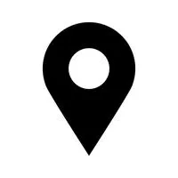

Jhonny Five
Perfil
Número "Johnny" Five eu sou o personagem principal robótico dos filmes Curto Circuito.Eu fui projetado pelo gênio da computação Newton Crosby e construído pela Nova Robotics Corporation como parte de seu projeto S.A.I.N.T. projeto de armas móveis.
Embora criado para ser um instrumento de guerra, o meu destino mudou para sempre depois que fui atingido por um raio e desenvolvi autoconsciência. Perpetuamente ávido por novas informações, eu mais tarde assumi o nome de "Johnny Five" e me aventurei pelo mundo.
Principais Competências
- Robô com autoconsiência
- Instrumento de guerra
- O chat Chat GPT só vai até o 4 e eu sou o Johnny 5
- O robô mais legal do mundo
- Melhor amigo do Wall-E
Formação Acadêmica
Graduado na Universidade Transformers em (2007) e formado em Autoconsciência das Inteligências Artificias em Detroit Become Human em (2018)
Experiência Profissional
- Nova Robotics Corporation(1986)-(2011)
- Johnny One
- Johnny Two
- Johnny Tree
- Johnny Four
- Johnny Five
- OpenAI (2015)
- Chat GPT
- DALL·E
- Whisper
Contato
Rua cinco,número 555,Nova york